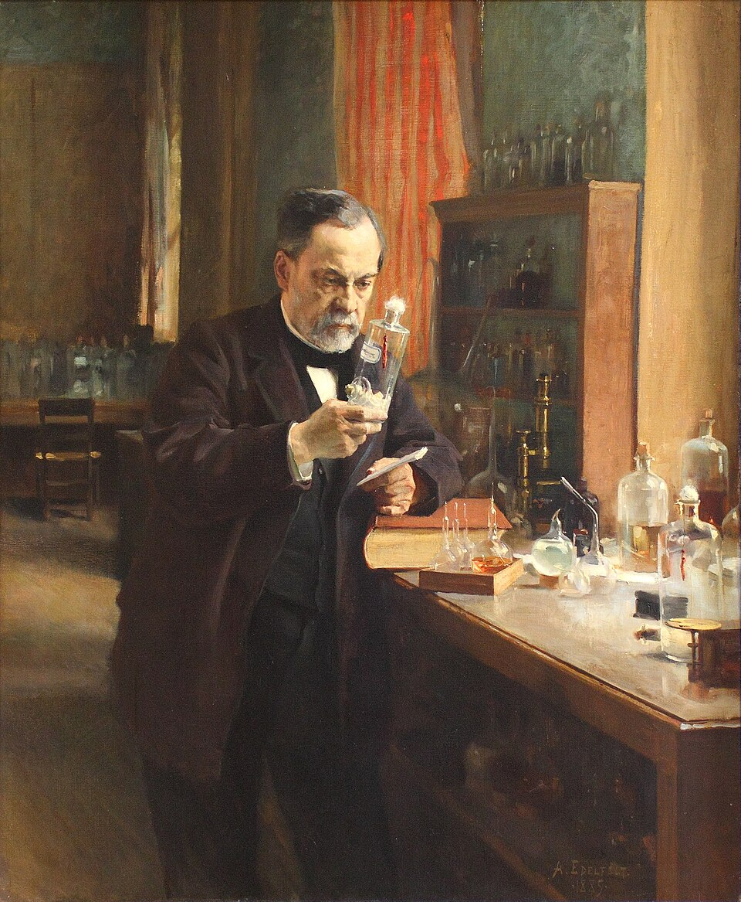

Genomics in Medicine & The AI Frontier
How DNA became digital software, why most blockbuster drugs fail, and how to tell real medical breakthroughs from tech hype.
Class Demographics & Academic Distribution
Baseline cohort characteristics for enrolled students (\(N = 151\)) across BIOL 3111 (Undergraduate, \(n = 137\)) and BIOL 5111 (Graduate, \(n = 14\)).
| Disciplinary Domain | Count (\(n\)) | Share (%) |
|---|---|---|
| Biological Sciences (General / Teaching) | 113 | 74.8% |
| Genomic Medicine & Bioinformatics | 12 | 7.9% |
| Neuroscience, Biochemistry & Biotechnology | 11 | 7.3% |
| Applied, Quantitative & Cross-College Programs* | 15 | 9.9% |
Who Am I? (And Why You Should Care)
I build the mathematical models and software that scientists and public health agencies use to track viruses, evolution, and drug resistance.
- • Created HyPhy & Datamonkey
- • The global standard for spotting natural selection in DNA
- • Separating true biological signal from mutational noise
- • Built HIV-TRACE (Official U.S. CDC standard)
- • Reconstructing viral transmission chains in real time
- • Ran global variant tracking pipelines for SARS-CoV-2
- • Top 1% cited researcher globally (~50k citations)
- • Continuous multi-million dollar NIH/NSF grant portfolio
- • Mentored dozens of alumni now in medicine & biotech
What You Get Out of This Room
Why learning from an active methodologist beats memorizing a sanitized 10-year-old textbook.
- • Textbooks pretend biology is neat and every test works
- • Here: We look at live 2026 data, raw DNA, and messy trials
- • You learn how science looks before it gets simplified
- • When you understand the math, marketing can't fool you
- • Spotting when algorithms fail, data gets twisted, or AI hallucinates
- • Biological mechanism > biotech press releases
- • In the AI era, memorizing trivia is a waste of time
- • Auditing claims, checking evidence, finding flaws
- • The gut instinct that sets you apart in med/grad school
The Elephant in the Room: AI is Everywhere
We can't pretend AI doesn't exist when 9 out of 10 biomedical research papers are already using it.
- • Tracked 379 telltale AI words across PubMed Central
- • "delves", "showcases", "pivotal", "exacerbating"
- • ~89% of recent biomedical papers show signs of LLM writing
- • Discussions (78%): Scientists using AI for their spin
- • Abstracts (68%): Quick summary generation
- • Introductions (63%): Background framing
- • Methods & Results (54–58%): Data descriptions
- • Banning AI is sticking your head in the sand
- • Your job isn't typing: It's knowing when the AI is lying
- • Catching hallucinations, oversimplifications, and errors
Preprints & The Evidence Ladder
That paper we just looked at was posted on arXiv 12 days ago. Should you trust it?
- • A paper shared publicly before peer review
- • Speed: Days to release vs. 1–2 years in review
- • Powered real-time COVID-19 & AI discovery
- • We read preprints because textbooks are 5 years behind
- • The Rule: You must act as your own peer reviewer (audit the data yourself)
What is "Medicine", Really?
A deceptively simple question that becomes considerably less obvious upon closer inspection.
- • "The science and art of curing disease and maintaining health."
- • (Oxford / Merriam-Webster / WHO)
- • Sounds simple, but it's actually a circular trap
- • Defines medicine using "health" and "disease"
- • Two words nobody can define without subjective opinions
- • Who decides what a "normal" human baseline is?
- • Old-School: Wait for heart attack → bypass surgery
- • Genomics: Editing PCSK9 at age 18 so plaques never form
- • Is that curing disease or genetic enhancement?
Busting Myths: Health, Disease & Genomics
Three foundational concepts that dissolve under quantitative biological scrutiny.
- • Myth: Health means a pristine, defect-free genome
- • Reality: You carry 50–100 broken genes and lethal recessives
- • Health is dynamic resilience, not genetic purity
- • Myth: Disease is an isolated mistake
- • Reality: Context-dependent evolutionary trade-offs
- • Sickle cell trait ruins red cells, but saves you from malaria
- • DNA ≠ Destiny: Incomplete penetrance is everywhere
- • Myth: A fixed, deterministic crystal ball
- • Reality: Dynamic living software
- • DNA code × Epigenetics × Gut Bugs × Environment
The Gaussian, Variance & The "Normal" Myth
Continuous traits follow population distributions; a resting pulse of 42 BPM reflects either elite conditioning or cardiac pathology depending entirely on context.
- • Gaussian (Bell Curve): Emerging whenever many small genetic & environmental factors combine
- • Mean (μ): The center / population average
- • Variance (σ²) / Spread (σ): How widely healthy individuals naturally differ
- • Medicine defines "normal" as the central 95% (μ ± 2σ)
- • The Catch: By pure math, 5% of completely healthy people are always shoved into the "abnormal" tails
- • "Abnormal" on a chart ≠ diseased patient
Where Do "Normal Lab Ranges" Actually Come From?
The arbitrary nature of laboratory reference intervals: why 101 is flagged as pathological while 99 passes without comment.
- • FDA / CLSI Standard (EP28-A3c): Requires a minimum sample of ≥120 "healthy" volunteers to set a 95% reference interval
- • Historically recruited from medical students, lab staff, & blood donors (mostly young, male, and white)
- • They plot the bell curve and arbitrarily chop off the bottom 2.5% and top 2.5%
- • The Math: 1 out of 20 healthy people is guaranteed to be flagged as "abnormal" by design.
- • Creatinine is a byproduct of muscle breakdown
- • Muscular Athlete: Creatinine 1.35 mg/dL → Flagged with Kidney Failure
- • Frail Elderly Patient: Creatinine 0.8 mg/dL → Labeled Healthy despite dying kidneys
Reference Intervals vs. Decision Limits: The Overlap Fallacy
Why static clinical cutoffs misclassify substantial fractions of patients when physiological distributions overlap.
Patients had "Normal" <200 cholesterol.
Healthy labeled "High Risk".
- • Statistical Reference Interval: Sampling the aggregate unstratified population (gray dashed curve) yields 130–280 mg/dL
- • Clinical Decision Limit (NCEP): Set at 200 mg/dL (the population median / 50th percentile) to trigger intervention
- • A "Decision Limit" is an epidemiological risk threshold, not a marker of physiological normality
- • The Fallacy: Assuming test values delineate two distinct biological states without overlap
- • Because healthy and diseased distributions overlap extensively, any single static threshold produces substantial false negatives and false positives
- • The Clinical Consequence: Roughly half of all acute coronary events occur in individuals with cholesterol below 200 mg/dL
The "Immortality Bro": Overclocking the Human Machine
Bryan Johnson (Project Blueprint): \$2M/year, 111 daily pills, and what happens when you treat biology like a spreadsheet.
My 17 y/o son, my 70 y/o father and I completed the world's first tri-generational plasma exchange. 1L of my son's young plasma is now in my veins.
Biological markers: Heart of a 37-year-old, skin of a 28-year-old, lung capacity of an 18-year-old. Goal: #DontDie
- • Assumes the human body is a car engine where you can dial 100 gauges back to "Age 18"
- • The Biological Reality: Evolution is an interconnected web of trade-offs
- • Nobody knows what 111 simultaneous compounds do to liver metabolism
- • Recently diagnosed with incurable autoimmune gastritis (his hyper-stimulated immune system attacking his stomach lining)
- • Johnson on X: "Been thinking things over and wonder if I've taken this whole longevity thing too far."
- • When you over-optimize a complex biological network, it bites back
Crammed into an Average: A Case Study in Me
Individual biology is multi-dimensional; standard clinical practice necessarily collapses this complexity into population means.
- • Thousands of miles/yr
- • High aerobic power
- • Athletic LBBB conduction
- • Stable 20-yr cholesterol
- • Zero coronary plaque
20-Year Trajectory
Arterial Health
Retains only:
[Age: 52] [Male] [Chol: >200]
- • Treated as sedentary
- • Metabolic syndrome risk
- • Verdict: High ASCVD risk
- • "Start high-dose statins & order cardiac imaging"
- • The Goal: Replace crude population averages with personal molecular & physiological resolution
- • The 2026 Reality: Genomic medicine aspires to do this, but mostly fails today
- • Most polygenic risk scores still suffer from population-average bias.
- • Treating individuals with blunt cohort averages leads to over-prescribing, false alarms, and missed real disease
- • In this course: We audit when tests actually capture individual mechanism vs. when they just enforce population averages
The Concept of 'Natural' Death: An Evolutionary Perspective
Why 'dying of old age' is a clinical convention rather than a distinct physiological mechanism.
- • Death certificates list "natural causes" or "old age", but cellular biology does not die of "time"
- • Autopsy Reality: A 98-year-old who "dies peacefully in their sleep" always dies from a specific catastrophic failure mode: fatal arrhythmia, stroke, micro-aspiration pneumonia, or sepsis
- • There is no biological code for "peaceful clock expiration"
- • Natural selection only cares about reproductive success
- • Once you pass reproductive and child-rearing age (~40–50), you enter the "Selection Shadow"
- • Evolution never optimized our genome to last 90 years. We are "disposable vehicles" built to pass on genes, not survive forever
- • If a 22-year-old's heart stops → Called a "tragedy and rare fatal disease"
- • If a 92-year-old's heart stops from the exact same molecular failure → Called "natural causes"
- • The Provocation: Is "disease" just a label we give to biological failure when it happens faster than the population average?
When Child Death Was "Natural": 150 Years Ago
What society regards as 'natural' mortality reflects historical technological capability rather than a biological constant.
- • As recently as the 1870s in London, Philadelphia, and New York: nearly 1 in 2 children died before age 5
- • Death registries routinely listed ordinary childhood events—like "Teething", "Croup", and "Summer Diarrhea"—as inevitable, fatal acts of nature
- • Losing multiple children was the universal human norm
- • British Registrar-General (1875): Official mortality tables documented that 40–50% of urban children died before age 5, with registries routinely recording causes simply as "Teething", "Decline", or "Convulsions".
- • The Darwin Family: Despite elite wealth and access to the foremost physicians in Britain, Charles and Emma Darwin lost 3 of their 10 children (Mary at 3 weeks, Anne at age 10, Charles Waring at 18 months) to infectious disease.
- • Cultural Baseline: Recurrent infant loss was accepted as an inevitable biological reality rather than a solvable epidemiological problem.
- • 1875: A 3-year-old dying of diphtheria was considered a tragic part of the "natural order of nature"
- • 2026: A child dying of diphtheria is an unacceptable, preventable systemic failure
- • The Lesson: What we call "natural" is simply whatever failure modes our current technology has not yet figured out how to fix
1,000 Years of Death: The Great Inversion
The historical transition in mortality: from acute infectious outbreaks to chronic degenerative conditions.
- • For 950 of the last 1,000 years: Over 75% of humans were killed by microscopic invaders (plague, smallpox, cholera, TB) before middle age
- • Today: Clean water, vaccines, and antibiotics crushed infectious mortality down to <7% in high-income nations
- • Cancer and cardiovascular disease didn't suddenly explode because modern life is "unnatural"
- • The Truth: We simply stopped dying of dysentery at age 4 and tuberculosis at age 20
- • We finally live long enough to enter the Evolutionary Selection Shadow
The Lifespan Simulator: From Birth to College & Beyond
Stochastic life trajectories of 50 individuals born in different historical epochs: who survives infant mortality, who reaches the college-age window (18–22), and what ends their lives.
The 7 Axes of Disease: Our Analytical Framework
A multi-dimensional taxonomy for characterizing disease behavior across seven continuous biological and epidemiological axes.
Disease Dossier: The Plague (Black Death)
How Yersinia pestis shaped fourteenth-century European demography and left detectable selective signatures in the human genome.
• 1347: Unmitigated Outbreak → 30–60% of Europe died in 4 years.
• 2026: Standard Antimicrobial Regimen → \$5 generic Doxycycline / Gentamicin.
- • Type III Secretion System: Acts as a microscopic hypodermic syringe, injecting Yop effector proteins directly into host macrophages
- • Immune Hijacking: Paralyzes human phagocytosis and shuts down inflammatory signaling, multiplying unchecked inside lymph nodes
- • Ancient DNA from London plague pits proves massive positive selection on the ERAP2 immune gene in 1348 survivors
- • The 2026 Trade-Off: That same protective ERAP2 variant increases the risk of Crohn's disease and autoimmunity in modern humans today.
Living Ghosts: How the Plague Still Shapes Us Today
Seven centuries later, medieval plague management continues to underpin modern quarantine protocols, institutional public health, and cultural tropes.
- • Quaranta Giorni (40 Days): Venice forced arriving merchant ships to sit anchored offshore for 40 days before landing → gave the world the word Quarantine
- • Everyday Idioms: "Avoid it like the plague", "Plagued by doubts"
- • Nursery Rhymes: "Ring Around the Rosie" (rosy rash → pocket full of posies to block miasma → "all fall down")
- • The Plague Doctor: Beaked leather masks stuffed with camphor/lavender to filter "miasma" → the iconic horror archetype (from Bloodborne to Halloween)
- • The Danse Macabre: Skeletons dragging kings and peasants alike → birthed the Grim Reaper
- • Zombie Apocalypse Tropes: The societal collapse template comes directly from medieval plague chronicles
- • The Labor Scarcity Shock: Wiping out 50% of the workforce gave surviving serfs unprecedented wage bargaining power
- • End of Feudalism: Landlords were forced to pay real wages, sparking the rise of a free merchant middle class & the Renaissance
- • Public Health: Created the first permanent city health boards & death registries
Disease Dossier: Smallpox (Variola Major)
Variola major: the pathogen responsible for roughly 300 million deaths in the twentieth century prior to coordinated global eradication.
• 1700s: Endemic European Baseline • 400,000 dead/yr in Europe.
• 1980: Global Eradication Verified (1980) (Vaccinia ring vaccination).
- • Massive DNA Genome: ~186 kb encoding ~200 viral proteins
- • Immune Sabotage: Carries decoy receptors that intercept human interferon, block complement, and suppress immune recruitment
- • Strict human tropism was its ultimate evolutionary vulnerability for eradication
- • Introduced to the Americas in 1520 → wiped out an estimated 80–90% of Indigenous populations (~20–50M people)
- • Decimated Aztec and Inca empires before Spanish armies arrived
- • Completely reshaped global geopolitics, languages, and genetics
Living Ghosts: How Smallpox Shaped Modern Society
From Jennerian cowpox inoculation (vacca) to eighteenth-century cosmetic practices and contemporary biosecurity.
- • Edward Jenner (1796): Observed milkmaids had clear skin because cowpox protected against smallpox
- • Inoculated James Phipps with cowpox (Variolae vaccinae, from Latin vacca = cow) → coined the word Vaccine
- • Earlier Variolation: Practiced in West Africa (Onesimus in Boston, 1721), the Ottoman Empire & China
- • The "Fair Complexion": Unscarred smooth skin was so rare it was prized as the supreme standard of beauty
- • White Lead Powder & Silk Patches: Aristocrats wore heavy white face powder and decorative silk "beauty marks" (mouches) specifically to conceal pockmark scars
- • Powdered wigs concealed smallpox hair loss
- • Single Greatest Medical Triumph: WHO declared smallpox eradicated in 1980 (last natural case: Ali Maow Maalin, Somalia 1977)
- • Routine vaccination stopped in 1972 → The Modern Risk: The world population is now completely immunologically naive
- • Survives only in two official freezers (CDC Atlanta & Vector Russia)
Disease Dossier: Tuberculosis (The White Plague)
Mycobacterium tuberculosis: an ancient chronic pathogen estimated to have caused one billion deaths over human history.
- • Mycolic Acid Shell: 60% of its cell wall is dense, waxy lipid that blocks immune enzymes and standard antibiotics
- • Granuloma Standoff: Immune macrophages wall off the bacteria into calcified tombs (Ghon focus), where it can sleep dormant for 50 years until immunity dips
- • When immunity weakens → "reactivation" melts lung tissue into cavitary disease
- • Standard cure requires 6 months of 4 simultaneous antibiotics (Rifampin, Isoniazid, Pyrazinamide, Ethambutol)
- • MDR & XDR-TB: Strains resistant to front-line drugs require 2 years of toxic second-line chemotherapy with <60% cure rates
- • Genomic whole-genome sequencing (WGS) is now used to detect resistance mutations within hours
Living Ghosts: How Tuberculosis Shaped Art & Architecture
How nineteenth-century sanatorium culture influenced modernist architectural design, public hygiene standards, and aesthetic norms.
- • In the 1800s, TB killed 25% of European adults & was romanticized as the "disease of sensitive artists & poets" (Keats, Chopin, Brontë sisters, Poe)
- • Beauty Standard: Pale translucent skin, rosy cheeks (hectic fever), dilated pupils, and extreme thinness became the 19th-century fashion ideal
- • Opera & Cinema: La Traviata, La Bohème, Moulin Rouge (Satine)
- • Before antibiotics, the only treatment was alpine fresh air & sunlight (heliotherapy in sanatoriums)
- • Architects (like Alvar Aalto & Le Corbusier) designed sanatoriums with flat roofs, glass balconies, white washable walls, and tubular metal chairs to prevent dust collection
- • Directly birthed Modernist & Bauhaus architecture!
- • Robert Koch (1882): Discovered TB bacteria in sputum → triggered massive public campaigns
- • Legal Bans: Outlawed spitting on public sidewalks; spittoons vanished from bars & courts
- • Inventions: Disposable paper cups (Dixie Cup), facial tissues (Kleenex), and shortened dress hemlines so skirts wouldn't drag in street sputum
Disease Dossier: Polio (Poliomyelitis)
The paralytic virus that afflicted 20th-century summers, paralyzed children in 48 hours, and spurred the birth of modern clinical trials.
- • In primitive sanitation, infants encountered polio while protected by maternal breastmilk antibodies → acquired lifelong immunity with mild diarrhea
- • The 20th-Century Irony: Clean water and suburban hygiene delayed exposure until childhood/adolescence
- • Without maternal antibodies, the virus invaded the central nervous system → triggering massive summer epidemics.
- • Binds to the CD155 receptor and travels retrograde up nerves to the spinal cord
- • Selectively destroys anterior horn alpha-motor neurons that control voluntary muscle movement
- • Because motor neurons cannot regenerate, denervated muscle fibers permanently atrophy
Living Ghosts: How Polio Created the ICU & Disability Rights
The emergence of intensive respiratory care, large-scale philanthropic research funding, and structural accessibility initiatives.
- • The Drinker Respirator (Iron Lung): Massive negative-pressure metal chambers that kept paralyzed diaphragms breathing
- • 1952 Copenhagen Polio Outbreak: Doctors manually ventilated children with rubber bags → invented positive-pressure mechanical ventilation
- • Literally birthed the Modern Hospital Intensive Care Unit (ICU)!
- • The March of Dimes: Millions of everyday citizens mailed 10-cent coins to the White House → created modern biomedical crowdsourced philanthropy
- • 1954 Salk Trial: 1.8 million children ("Polio Pioneers") • largest double-blind clinical trial in history
- • Jonas Salk: Refused to patent the vaccine ("Could you patent the sun?")
- • Tens of thousands of paralyzed children grew into adults demanding full societal access and independence
- • Ed Roberts & Judy Heumann: Polio survivors who led the 504 Sit-In and founded the Independent Living Movement
- • Directly led to the Americans with Disabilities Act (ADA), sidewalk curb cuts, and wheelchair transit
From Demon Possession to the Four Humors
The transition from supernatural attribution to naturalistic physiological models in early classical medicine.
- • The Core Theory: Disease is an external curse, a punishment from the gods, or demonic infestation caused by moral failing or sin
- • The Interventions: Trepanation (drilling holes in skulls to let demons out), exorcisms, temple sacrifices, and magical amulets
- • Epistemic Trap: Zero predictive power; human health is entirely subject to divine caprice
- • The Great Breakthrough: Disease has natural causes, not demonic ones (Balance of Blood, Phlegm, Yellow & Black Bile)
- • 2,200 Years of Stagnation: For over 80 generations of doctors, medical theory stood completely still: bleed, purge, blister, and leech
- • George Washington (1799): Caught a sore throat → his elite physicians drained 2.5 liters of blood (50% of his blood volume!) in 12 hours, killing him under Galenic rules
The Paris School: "Open a Few Corpses"
The establishment of clinicopathological correlation: connecting bedside symptoms to post-mortem anatomical lesions.
- • Post-French Revolution Paris combined massive hospital wards with immediate autopsies
- • The New Rule: A disease is not a vague whole-body humor—it is a localized physical lesion in a specific organ or tissue
- • Symptoms became clues pointing to an underlying physical malfunction
- • René Laennec (1816): Invented the stethoscope to hear internal acoustic lesions in living lungs and hearts
- • Doctors became master diagnosticians of dead tissue, but still had zero cures
- • They could map pneumonia or cirrhotic livers beautifully at autopsy, but did not know what caused the lesion in the first place
- • Medicine required a microscopic cause: The Germ
The Germ Theory: Finding the Invisible Invader
The empirical refutation of miasma theory: demonstrating specific microbial etiology for infectious diseases.
- • Ignaz Semmelweis (1847): Proved doctors were carrying "cadaverous particles" to mothers → handwashing cut maternal mortality from 18% to 1%
- • John Snow (1854): Mapped the Broad Street cholera outbreak to a contaminated water pump, ending the "bad air" (miasma) theory
- • Louis Pasteur: Disproved spontaneous generation; developed rabies & anthrax vaccines
- • Robert Koch (1882): Identified the bacteria behind anthrax, TB, and cholera
- • Koch's Postulates: Established the first strict causal criteria to prove a specific microbe causes a specific disease
- • Germ theory gave humanity clean water, chlorination, pasteurization, vaccines, and penicillin (1928)
- • The Result: Global human life expectancy doubled from ~40 years in 1900 to ~80 years today
- • Crushed infectious mortality in the developed world
Right Result, Wrong Model: Pasteur's "Soil Depletion"
How Louis Pasteur successfully derived attenuated vaccines while operating under an incorrect theoretical model of host biology.

In his laboratory (Edelfelt, 1885)
Developed rabies & anthrax vaccines decades before antibodies were discovered.
- • In 1880, antibodies, T-cells, and B-cells were completely unknown
- • Pasteur's Agricultural Analogy: He viewed the body like a field of farmland soil containing specific trace "fertilizers" needed for bacteria to grow
- • He believed a vaccine worked simply because the weakened bacteria ate all the trace nutrients in the soil, leaving nothing for future invaders to feed on.
- • The Paradox: The vaccines actually worked! (Chicken cholera, anthrax, and rabies)
- • Pasteur successfully saved thousands of lives and launched modern vaccinology while operating on a completely incorrect biological model
- • Proves that empirical observation can succeed long before mechanistic understanding catches up
- • Metchnikoff (1882): Discovered phagocytes eating bacteria (Cellular immunity)
- • Paul Ehrlich & Behring (1890s): Discovered antitoxins and antibodies (Humoral immunity)
- • The body wasn't a passive empty field—it was an active fortress with molecular weapons and genetic memory.
The Titan's Flaw: Robert Koch, "Tuberculin" & Conan Doyle
How the enthusiasm for Koch's 'Tuberculin' preceded clinical verification, and the subsequent critique by Arthur Conan Doyle.
Discovered TB, Anthrax & Cholera
Announced a secret cure for TB in 1890 that turned out to be fatal in trials.
- • At the 1890 Berlin World Congress, Robert Koch shocked the world by announcing he had discovered a cure for tuberculosis: "Tuberculin"
- • The Red Flag: Koch refused to reveal its chemical composition, keeping it a proprietary secret
- • Thousands of desperate consumptive patients and doctors flooded Berlin buying black-market vials
- • Dr. Arthur Conan Doyle (then a young physician) took a train to Berlin to investigate Koch's patients firsthand
- • The Sherlockian Audit: Doyle noticed patients were not being cured—they were suffering violent fevers, necrosis, and fatal relapses
- • Doyle published a scathing critique in the press, correctly warning the world that Tuberculin was a dangerous failure months before the establishment admitted it
- • Rudolf Virchow performed autopsies proving Tuberculin ruptured calcified granulomas, spreading lethal bacteria throughout the body
- • Koch was publicly humiliated and forced to reveal the ingredients (boiled bacterial broth)
- • The Bridge to EBM: Proved that even Nobel-caliber geniuses cannot be trusted without transparent, randomized data.
Evidence-Based Medicine: The Triumph & Trap of the Average
How randomized controlled trials (RCTs) banished untested dogma with statistics—and accidentally created the blockbuster "non-responder" waste.
Humira (Adalimumab) • Autoimmune
1 in 4 Benefit
~$15 Billion / Year Non-Responder Waste
- • Bradford Hill (1948) & Archie Cochrane (1970s): Replaced doctor intuition, clinical ego, and tradition with double-blind randomized controlled trials (RCTs)
- • The Revolution: Banished thousands of useless surgeries, bloodletting relics, and toxic folklore
- • Established $p < 0.05$ systematic clinical trials as the gold standard of medicine
- • The Blockbuster Model: If a drug helps 25% of patients in a 10,000-person trial ($p < 0.001$), it gets FDA-approved for 100% of patients
- • The Catch: EBM evaluates the average population effect—it cannot tell you if the individual sitting in front of you is in the 25% who benefit or the 75% who suffer side effects
- • The "average patient" does not exist in nature • Enter Genomics
What Precision Medicine Aspires to Be
Moving from macroscopic anatomical classification and population averages to molecular taxonomy and individualized risk.
- • Old Medicine: Treats "lung cancer" or "breast cancer" based on the anatomical organ
- • Genomic Aspiration: Treats EGFR L858R mutation or HER2 amplification regardless of organ
- • Diseases are reclassified by their broken molecular code, not anatomical geography
- • Replaces arbitrary "120-person normal lab ranges" with your own longitudinal baseline
- • Catching personal rate-of-change deviations years before organ failure or clinical symptoms appear
- • Moving medicine from reactive repair to preemptive editing
- • It is an ASPIRATION: We are not there yet for 90% of chronic diseases
- • Today's polygenic scores still suffer from population biases & ancestry disparities
- • Our Course Goal: Separating genuine molecular breakthroughs (e.g., Gleevec, CRISPR, PCSK9) from tech-bro marketing hype
Virtually zero progress. Doctors bled, leeched, and purged patients with no knowledge of germs, cells, or molecules.
Germ theory → Penicillin (1928) → DNA double helix (1953) → RCTs (1970) → Human Genome (2001) → CRISPR & AI Biology (2026).
Where Genomics Plugs into Modern Medicine
Genomics represents an infrastructure layer across the clinical lifecycle: from preemptive risk stratification to targeted intervention.
Fate vs. Odds: Genetic Determinism vs. Risk
Why high relative risk ratios frequently translate into modest absolute lifetime probabilities in complex polygenic disease.
Genotype = Phenotype ($P=1.0$): If you inherit the variant, you will develop the disease. No diet or lifestyle can stop it.
- • Examples: Huntington's, Tay-Sachs, Early-Onset Familial Alzheimer's (PSEN1)
- • Rarity: Accounts for <2% of all human diseases
Genotype = Biased Dice ($P < 1.0$): DNA shifts your lifetime odds, but lifestyle, environment, and chance decide the outcome.
- • The Revelation: Even with 2 copies of APOE4 (12x higher risk), 88 out of 100 people stay dementia-free!
- • Prevalence: Accounts for >98% of all chronic human diseases
Beyond the Human Genome: The Other DNA in the Room
Clinical genomics encompasses multiple genomic compartments: host germline, somatic tumor evolution, metagenomics, and pathogens.
- • Real-Time Variant Tracking: Sequencing SARS-CoV-2, Influenza, and HIV mutations as they evolve across transmission chains
- • Antimicrobial Resistance (AMR): Reading bacterial DNA directly to detect drug-resistance mutations in hours rather than waiting weeks for culture growth
- • Cancer is an evolving rogue genome: A tumor carries thousands of post-zygotic mutations completely distinct from your healthy cells
- • Liquid Biopsy: Detecting circulating tumor DNA (ctDNA) floating in blood to catch relapse or match therapy before tumors are visible on scans
- • Trillions of gut microbes carry 100x more unique genes than your human genome
- • Microbial genes digest complex fibers, train your adaptive immune system, and can directly activate or destroy medical drugs in your gut.
Pharmacogenomics: The Right Drug at the Right Dose
Why standard pharmacological dosing produces therapeutic success, clinical inefficacy, or adverse toxicity depending on host genotype.
- • Cytochrome P450 Genes: CYP2D6, CYP2C19, and CYP3A4 process >80% of all prescription drugs
- • Poor Metabolizers: Cannot break down drugs → toxic buildup on standard doses
- • Ultra-Rapid Metabolizers: Destroy drugs before they ever work
- • Codeine: Ultra-rapid CYP2D6 turns codeine instantly into lethal morphine (respiratory arrest!)
- • Plavix: Poor CYP2C19 cannot activate the drug → fatal stent blood clots
- • A single \$50 EHR test eliminates prescribing guesswork forever
From Reactive Sick-Care to Preemptive Editing
The clinical shift from managing late-stage organ failure toward identifying molecular vulnerabilities before tissue damage occurs.
- • Trigger: Wait until an organ fails, a 2-cm tumor appears, or an artery ruptures
- • Intervention: Invasive salvage surgery, emergency stents, and high-dose toxic chemotherapy
- • Economics: 85% of healthcare spending occurs during late-stage crises
- • Trigger: Spot genetic risk variants, abnormal liquid biopsy ctDNA, or rate-of-change deviations years early
- • Intervention: Lifestyle tuning, early screening, targeted small molecules, or one-time epigenetic / CRISPR edits (e.g., PCSK9 / HBB)
- • Result: Disease is stopped at the molecular code level before it ever harms tissue
CML (Step 1): The Fatal Disease & The Chromosomal Clue
How an incurable myeloproliferative disorder provided the first evidence of a consistent chromosomal translocation in human malignancy.
- • Chronic Myeloid Leukemia (CML) caused bone marrow to churn out billions of useless, immature white blood cells
- • The Blast Crisis: Within 3 to 5 years, the cancer turned acutely aggressive, overwhelming organs and killing 100% of patients
- • Toxic chemotherapy only prolonged life by a few miserable months
- • In 1960 in Philadelphia, researchers looking under light microscopes noticed leukemia patients shared a weirdly tiny, truncated chromosome 22
- • Dubbed the "Philadelphia Chromosome"—the first consistent genetic abnormality ever linked to a human cancer
- • But nobody knew where the missing DNA went.
- • Using newly invented fluorescent banding, Dr. Janet Rowley proved DNA wasn't lost—it was traded
- • The Translocation t(9;22): The tip of chromosome 9 broke off and swapped places with chromosome 22
- • The Mystery: Why would swapping chromosome tips create a deadly cancer?
CML (Step 2): The Constitutive Kinase Activation (The BCR-ABL Oncoprotein)
How the t(9;22) translocation generates an uncapped, constitutively active chimeric tyrosine kinase.
- • Tyrosine Kinase: A molecular enzyme that transfers high-energy phosphate from ATP onto target proteins
- • Constitutive Signaling: BCR-ABL activates STAT5, AKT, and RAS/MAPK pathways simultaneously
- • Forces bone marrow stem cells to divide uncontrollably and ignore apoptosis signals
- • CML was not a multi-organ mystery—it was driven by a single rogue kinase pocket
- • The Precision Dream: If chemists could synthesize a small molecule to jam that specific ATP-binding cleft, could they cure leukemia without killing the patient?
- • Next Step → Brian Druker & Gleevec
CML (Step 3): The Targeted Small Molecule (Gleevec & Brian Druker)
Structure-guided synthesis of a competitive ATP-pocket inhibitor, establishing the paradigm of targeted kinase therapy in oncology.
ATP freely binds into the catalytic pocket, transferring phosphate to downstream proteins and driving endless leukemic proliferation.
- • Old Chemotherapy: Carpet-bombs all dividing cells (killing bone marrow, gut lining, and hair)
- • Imatinib (Gleevec): Fits only into the inactive ATP conformation of BCR-ABL with sub-nanomolar affinity
- • Normal healthy blood cells lack BCR-ABL → survive unharmed.
- • In the Phase 1 trial by Brian Druker, 53 of 54 patients (98%) achieved complete remission
- • Patients literally walked out of hospice and lived decades on 1 pill a day
- • 10-year overall survival skyrocketed from <10% to over 90%!
CML (Step 4): Darwinian Resistance & The Molecular Cure
Clonal selection under targeted therapy, molecular monitoring via quantitative RT-PCR, and the feasibility of treatment-free remission.
- • Cancer is an evolving ecosystem: In some patients, a single random mutation (like T315I) swaps Threonine for a bulky Isoleucine inside the kinase pocket
- • The mutation physically bumps Gleevec out of the lock while still allowing ATP in.
- • The Genomic Fix: Sequencing detects the mutation, prompting immediate switch to 2nd & 3rd-generation inhibitors (Dasatinib, Ponatinib)
- • Minimal Residual Disease (MRD): Doctors don't look at bone marrow biopsies anymore—they run quantitative RT-PCR on blood
- • Detects a single leukemic transcript among 1,000,000 normal cells
- • Alerts oncologists to microscopic resistance months before any symptoms return
- • Patients who sustain undetectable molecular transcripts for years can now stop taking the medication entirely (Treatment-Free Remission / TFR)
- • The patient is functionally cured, living drug-free without relapse
- • The Grand Blueprint: CML established the universal template for targeted therapy in lung cancer (*EGFR*), melanoma (*BRAF*), and breast cancer (*HER2*)
In-Class Sprint: The Precision Data Hunt
Turn to your neighbors. Open your section's database on your laptop or phone, discover the real numbers, and submit on Canvas.
Open these links on your laptop or phone to look up your assigned drug:
clopidogrel → check "Boxed Warning / CYP2C19"• gnomAD Search: Type
CYP2C19 or rs4244285 (*2 allele) → see "Population Frequencies" table (East Asian: ~30%, European: ~15%)• FDA Table:
Ctrl+F → clopidogrel • CMS (Part D): Clopidogrel (>2.5M patients)
- 1. Biomarker: What specific gene & variant dictates response?
- 2. Prevalence: What % of patients carry the non-responsive / target allele?
- 3. Clinical Impact: What happens if prescribed blindly without testing?
Key Conclusions: The Foundations of Genomic Medicine
Six core principles that govern our quantitative and epistemic framework throughout the semester.
Nature produces multivariate distributions, not Platonic ideals. Rigid reference intervals conceal high individual variance and pathological overlaps.
In 150 years, mortality shifted from external microbes to internal polygenic decay. We conquered childhood infections only to confront our own genomic design limits.
Empiricism can stumble into vaccines with flawed models (Pasteur's depleted soil), but curing cancer and complex disease requires decoding the exact molecular machinery.
EBM evaluates population means—prescribing drugs where 75%+ of patients derive zero benefit. Genomics provides the missing half: targeting the responsive cohort before writing the prescription.
Outside rare Mendelian defects (<2%), DNA loads the dice but does not seal fate. A 12x relative risk can still mean an 88% probability of remaining entirely disease-free.
CML proved the genomic promise: Translocation → Constitutive Kinase → ATP-pocket inhibitor (Gleevec) → Liquid monitoring → Safe drug discontinuation.
Lecture 1 Summative Quiz: Test Your Understanding
Select a question to evaluate your grasp of statistical distributions, historical transitions, and targeted mechanisms.